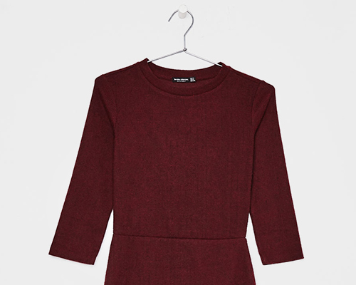
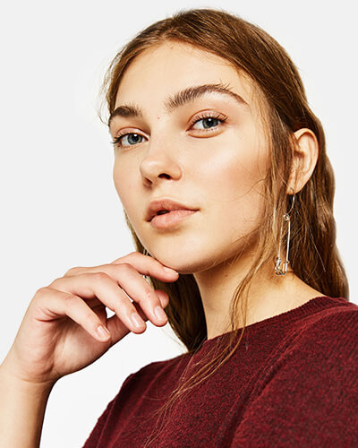

Heritage
Skin
First developed in the 50s, the Web instantly became the hallmark of a cultured club. Here it is used to frame the edges of this knee length dress. The pearl buttons are a new signature element of the brand. The crêpe wool silk is a light soft fabric with a creased appearance.
For Europe, we offer Free Express shipping with all orders (except for those delivered with the Saturday delivery option). From the moment the order leaves our warehouse, we deliver in 1-2 business days (or 2-3 business days in UAE). All orders are processed Monday through Saturday (Saturday only where the service is available and has been selected), excluding Sunday and holidays.

